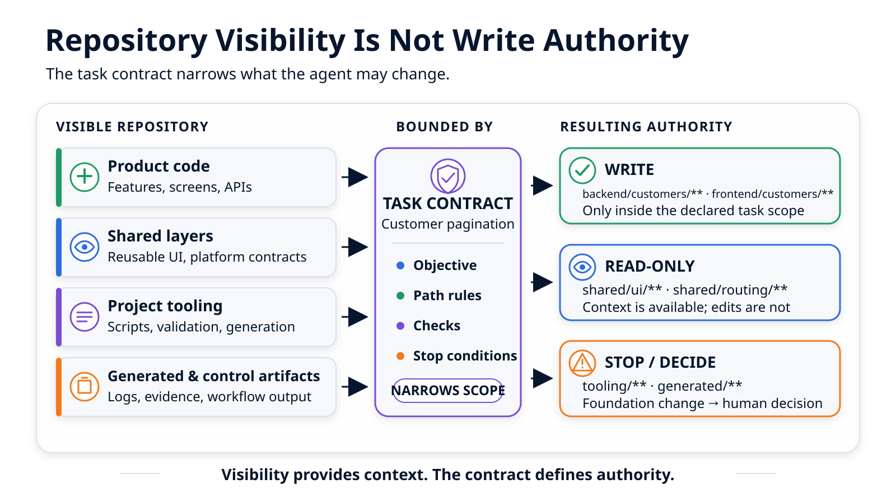

Mon repository agent-ready : ce que l'agent doit savoir avant de coder¶
Un agent reçoit « ajoute la pagination serveur à l'annuaire clients ». Avant de modifier une ligne, il doit retrouver l'architecture, les composants à réutiliser, ses chemins d'écriture, les validations attendues et les décisions qui ne lui appartiennent pas. Voici comment un repository peut rendre ce parcours concret.
L'article précédent présentait le repository comme la première brique d'un système de développement avec agents : il porte les règles durables, tandis que le plan prépare le contexte et que le workflow observe l'exécution. Rendons maintenant cette première brique tangible.
La demande brute tient en une phrase :
Ajouter une pagination serveur à l'annuaire clients.
Pour examiner toutes les pièces du repository, nous allons ouvrir la forme cible de cette mission jusqu'au rapport attendu. Il s'agit d'une projection concrète, pas encore de l'exécution de la feature : l'article suivant reviendra au moment où il faut choisir son niveau de contrôle, puis le parcours de bout en bout montrera son exécution réelle.
Un agent performant peut explorer le code et proposer rapidement une solution. Il peut aussi choisir la voie la plus directe : modifier le routeur commun pour synchroniser la page dans l'URL, adapter une primitive partagée et faire passer les tests. Le résultat semble fonctionnel, mais une demande produit vient alors de modifier le socle utilisé par d'autres fonctionnalités.
Le problème n'est pas que l'agent ne sait pas coder. Il ne connaît pas encore l'autorité attachée aux différentes parties du repository.
Voir un fichier donne du contexte. Cela ne donne pas automatiquement le droit de le modifier.
9 h 12 : la mission arrive¶
Avant d'ouvrir l'éditeur, l'agent devrait pouvoir obtenir des réponses précises. Pour notre pagination, elles ressemblent à ceci :
| Question | Réponse disponible avant le code |
|---|---|
| Quel résultat est attendu ? | L'API renvoie les éléments, la page courante et le total ; l'interface charge la première page et permet d'avancer ou de revenir |
| Quelles conventions sont déjà décidées ? | 25 éléments par page ; une page invalide renvoie HTTP 404 avec le code pagination_page_invalide |
| Où se trouve le code produit ? | backend/customers/** pour l'API, frontend/customers/** pour l'interface |
| Que faut-il réutiliser ? | Le client API existant, le composant Button et les états loading, empty et error existants |
| Que peut-il modifier ? | Les deux zones produit, dans les limites exactes de la tâche |
| Que peut-il seulement consulter ? | shared/ui/**, shared/state/**, shared/routing/** et la documentation du contrat |
| Que ne doit-il pas toucher ? | tooling/**, generated/** et les artefacts de contrôle du workflow |
| Comment valider ? | Tests backend, tests frontend et compilation frontend via les commandes stables du repository |
| Quand doit-il s'arrêter ? | Si une décision produit reste ouverte, si un consommateur devient incompatible, ou si le travail touche la sécurité, des données sensibles, une migration, une dépendance, une infrastructure, un effet externe difficilement réversible ou le socle |
Cette table n'est pas un prompt géant à maintenir à la main. Certaines réponses sont stables et appartiennent au repository ; d'autres sont dérivées pour la demande courante. Le travail de préparation consiste à les retrouver, les sélectionner et les rendre cohérentes avant l'exécution.
Suivons le chemin qui permet à l'agent de les obtenir.
Étape 1 : ouvrir un point d'entrée court¶
À la racine, un fichier comme AGENTS.md doit dire où commencer. Son rôle est d'orienter, pas de recopier toute la documentation.
# Point d'entrée des agents
Lire d'abord :
- agent-docs/write-boundaries.md
- agent-docs/workflow.md
- agent-docs/architecture.md
Règles :
- écrire le code métier uniquement dans les zones produit autorisées ;
- traiter le socle partagé en lecture seule pour une tâche produit ;
- ne jamais modifier directement les fichiers générés ou l'état du workflow ;
- arrêter si la solution exige une évolution du socle ;
- valider la zone modifiée avec les commandes du repository.
Commandes de référence :
- make test-back
- make test-front
- make build-front
En quelques lignes, l'agent apprend l'ordre de lecture, les règles critiques et les commandes à privilégier. Les détails restent dans des documents spécialisés : architecture, frontend, backend, workflow, frontières d'écriture et documentation métier.
Cette hiérarchie évite deux échecs fréquents. Un fichier d'entrée trop long dilue les règles critiques. Un fichier trop vague renvoie l'agent vers une exploration sans fin. Le bon point d'entrée donne la prochaine adresse et explique pourquoi elle fait autorité.
Étape 2 : transformer l'arborescence en carte de responsabilités¶
Le repository d'exemple expose les zones utiles à l'annuaire de manière lisible :
repository/
├── AGENTS.md
├── Makefile
├── agent-docs/
│ ├── architecture.md
│ ├── backend.md
│ ├── frontend.md
│ ├── workflow.md
│ └── write-boundaries.md
├── docs/customers/
│ └── pagination.md
├── frontend/customers/
│ ├── customer-list.tsx
│ ├── customer-api.ts
│ └── customer-list.test.tsx
├── backend/customers/
│ ├── api.py
│ └── tests/
├── shared/ui/
├── shared/state/
├── shared/routing/
├── tooling/
├── generated/
└── workflow-state/
L'arborescence seule ne suffit pas. La documentation d'architecture associe chaque zone à une responsabilité et à une politique habituelle :
| Zone | Responsabilité | Politique pour une tâche produit |
|---|---|---|
frontend/customers/** |
Écran, client API et comportements de l'annuaire | Écriture possible si le contrat de tâche l'autorise |
backend/customers/** |
API et logique métier clients | Écriture possible si le contrat de tâche l'autorise |
shared/ui/** |
Composants réutilisables appartenant au projet | Réutilisation ; adaptation seulement si la tâche l'autorise explicitement |
shared/state/** |
État partagé entre plusieurs fonctionnalités | Consultation ; modification explicitement planifiée |
shared/routing/** |
Routage commun de l'application | Consultation ; modification séparée |
tooling/** |
Scripts, génération et configuration de développement | Hors périmètre par défaut |
generated/** |
Fichiers produits automatiquement | Ne pas modifier à la main |
workflow-state/** |
État, résultats et preuves produits par le workflow | Ne pas modifier depuis l'exécution produit |
La documentation métier complète cette carte. Pour l'annuaire, elle indique que l'API est interne, identifie son propriétaire, décrit les états d'interface existants et fixe les conventions de pagination. Elle peut aussi signaler les points de réutilisation utiles aux demandes plus petites : traduction locale de l'état vide, fonction resetFilters(), mécanisme de rechargement et composant Button partagé. La documentation frontend indique enfin comment lancer un seul fichier de test avant les validations plus larges du repository.
Ces informations évitent deux dérives opposées. L'agent ne duplique pas un composant déjà disponible, mais il ne transforme pas non plus sa capacité à l'importer en autorisation de le modifier.

Étape 3 : résoudre les décisions avant de compiler la mission¶
La demande brute ne précise pas si la page doit apparaître dans l'URL. Pendant la préparation du travail, l'exploration révèle deux solutions légitimes : garder la page dans l'état local, ou la synchroniser dans l'URL. La seconde exige une capacité absente de shared/routing/**.
Le contrat définitif n'existe pas encore. C'est précisément le bon moment pour arrêter la préparation et formuler la décision :
Constat : synchroniser la page dans l'URL exige une évolution du routeur partagé.
Limite : une tâche produit ne peut pas décider seule de modifier shared/routing/**.
Options :
1. conserver la page dans l'état local ;
2. ouvrir une évolution séparée du routeur avec analyse des consommateurs.
Recommandation : conserver l'état local pour cette livraison.
Décideur : responsable de la fonctionnalité ; responsable plateforme si l'option 2 est retenue.
Décision attendue : choisir le comportement de cette livraison.
Le responsable de la fonctionnalité choisit la première option. La décision est conservée dans docs/customers/pagination.md : la page reste locale et la synchronisation URL devient un non-objectif. Le propriétaire de l'API a déjà validé dans le même document les métadonnées, la taille de 25 éléments et l'erreur HTTP 404 portant le code pagination_page_invalide.
Cette décision intervient avant l'exécution. Le document devient ensuite une référence en lecture seule pour l'agent. Si le code exige un autre contrat, l'agent s'arrête : il ne réécrit ni la décision ni sa source pour faire correspondre la documentation à son implémentation.
La détection du besoin de routeur reste en partie sémantique. Un workflow ne peut pas déduire automatiquement toutes les nécessités architecturales ; l'agent ou la personne qui prépare la tâche doit les signaler. Un contrôle de chemins pourra détecter plus tard une modification de shared/routing/**, mais seulement après l'écriture.
Étape 4 : transformer les règles stables en ordre de mission¶
Le contrat général du repository peut déclarer frontend/customers/** et backend/customers/** éligibles aux modifications produit. Seule la tâche courante peut les autoriser effectivement. Une correction sur le paiement ou l'authentification n'a aucune raison d'y écrire.
Dans une mise en œuvre, l'objectif et les non-objectifs peuvent venir du brief, les décisions d'un registre humain, et les chemins ou validations du plan et des tâches. Pour l'agent, ces éléments forment un ordre de mission cohérent. Nous verrons dans l'article suivant quelle quantité de préparation mérite chaque type de changement ; voici le résultat concret attendu juste avant de coder :
objectif: >-
Ajouter une pagination serveur à l'annuaire clients.
resultats_observables:
- "L'API renvoie les éléments, la page courante et le nombre total."
- "L'annuaire charge la première page à l'ouverture."
- "L'utilisateur peut avancer et revenir sans dépasser les limites."
- "Les états loading, empty et error restent distincts."
decisions_connues:
taille_de_page: 25
page_invalide:
statut_http: 404
code: "pagination_page_invalide"
perimetre:
ecriture:
- "backend/customers/**"
- "frontend/customers/**"
lecture_seule:
- "shared/ui/**"
- "shared/state/**"
- "shared/routing/**"
interdit:
- "tooling/**"
- "generated/**"
- "workflow-state/**"
references_de_contexte:
- "docs/customers/pagination.md"
- "Client API clients existant."
- "Composants d'interface existants."
- "États loading, empty et error existants."
validations:
- "make test-back"
- "make test-front"
- "make build-front"
non_objectifs:
- "Synchroniser la page dans l'URL."
- "Modifier une primitive partagée."
- "Ajouter une dépendance ou une infrastructure."
- "Migrer ou restructurer les données."
arreter_si:
- "Une décision produit reste ouverte."
- "Le contrat devient incompatible avec un consommateur existant."
- "Le travail touche la sécurité, une autorisation ou des données sensibles."
- "Un effet externe difficilement réversible apparaît."
- "Une validation requise ne peut pas être lancée sans élargir l'environnement ou le périmètre."
- "L'implémentation ne peut respecter un non-objectif."
sortie_attendue:
- "Liste des fichiers modifiés."
- "Commandes réellement exécutées, codes de retour et résultats utiles."
- "Validations déclarées sans résultat d'exécution."
- "Questions, blocages et écarts restants."
Chaque partie répond à une question pratique. L'objectif évite de confondre la demande avec une solution particulière. Les résultats observables bornent le comportement attendu. Les décisions connues ne doivent pas être réinventées. Les chemins transforment la visibilité en autorité. Les validations indiquent quelles commandes lancer si l'exécution atteint cette étape ; l'absence de résultat doit rester visible. Les non-objectifs et conditions d'arrêt séparent enfin les choix locaux des décisions qui exigent un humain.
L'organisation exacte de ces informations peut varier entre plusieurs fichiers. Leur ensemble doit rester assez explicite pour que deux agents différents reçoivent la même mission et pour que la revue puisse comparer le résultat à cette mission.
Étape 5 : prévisualiser un résultat contrôlable¶
Avant de lancer l'implémentation, cette projection permet de vérifier que le contrat pourra produire un rapport réellement relisible. Voici à quoi ressemblerait une exécution réussie dans un parcours complet doté d'un contrôle granulaire des chemins ; un parcours léger pourrait s'appuyer sur une relecture de diff plus simple.
Projection du rapport attendu
État Git au départ
changements préexistants : aucun
Fichiers modifiés observés
backend/customers/api.py
backend/customers/tests/test_pagination.py
frontend/customers/customer-api.ts
frontend/customers/customer-list.tsx
frontend/customers/customer-list.test.tsx
Couverture du contrôle de chemins
index Git : visible dans git status, mais hors du contrôle fin
working tree non indexé : inclus
fichiers non suivis : inclus
fichiers indexés à la fin : aucun
Frontières sur le périmètre couvert
fichiers hors périmètre : aucun
fichiers en lecture seule modifiés : aucun
Validations
make test-back → code de retour 0
make test-front → code de retour 0
make build-front → code de retour 0
tests end-to-end → non demandés, non exécutés
Déclaration de l'agent
statut : terminé
question ouverte : aucune
Un tel rapport permettrait des conclusions précises : les fichiers inclus dans le contrôle fin appartiennent au périmètre déclaré ; aucun fichier n'était indexé à la fin ; les trois commandes enregistrées ont retourné 0 dans cet environnement ; les tests end-to-end n'ont pas été exécutés. Il ne permettrait pas d'affirmer que le logiciel est correct, que la couverture est suffisante ou que la CI reproduira le même résultat.
La couverture Git annoncée compte. Ici, l'index apparaît dans le statut brut, mais ses fichiers ne rejoignent pas automatiquement la comparaison fine des chemins. L'absence de fichier indexé évite cette ambiguïté pour cette exécution ; un rapport contenant des changements indexés devrait les signaler comme une lacune du contrôle. Si le working tree contenait déjà des modifications, elles devraient être listées ou le rapport devrait reconnaître qu'il ne sait pas attribuer chaque ligne à l'exécution courante.
Le contrôle de chemins reste lui aussi un contrôle après écriture, pas un sandbox. Selon la politique de reprise configurée, il peut refuser le résultat, déclencher une reprise ou obliger à restaurer un fichier protégé. Il ne prouve pas que le processus était techniquement incapable d'écrire ailleurs.
Un rapport utile établit des faits bornés sur une exécution. L'humain décide si ces faits suffisent pour accepter le risque restant.
La même règle sur quatre supports¶
Nous pouvons maintenant revenir à la règle « une tâche produit ne modifie pas le socle partagé ». Elle n'est plus une abstraction : nous venons de la suivre à quatre endroits.
| Support | Ce qu'il contient dans notre exemple | Ce qu'il apporte |
|---|---|---|
| Documentation d'architecture | shared/routing/** appartient au socle commun et possède plusieurs consommateurs |
Explique la responsabilité et la raison de la frontière |
AGENTS.md |
Arrêter lorsqu'une tâche produit exige une évolution du socle | Oriente le comportement pendant l'exploration |
| Contrat de tâche | shared/routing/** est en lecture seule ; la synchronisation URL est un non-objectif |
Rend la limite explicite pour cette exécution |
| Rapport du parcours complet | Aucun fichier inclus dans le contrôle fin sous shared/routing/** |
Compare le résultat observé au périmètre déclaré |
Chaque support a sa limite. La documentation informe. L'instruction est interprétée par l'agent. Le contrat déclare l'autorité sans créer à lui seul une permission système. Le workflow ne conclut que sur les faits qu'il a effectivement observés.
Une règle critique gagne à apparaître dans ces quatre couches, avec une formulation adaptée à chacune. La recopier mot pour mot partout créerait de la dérive ; la laisser dans une seule conversation la rendrait introuvable.
Ce que « agent-ready » ne garantit pas¶
Le repository réduit l'ambiguïté. Il ne rend pas l'exécution sûre ou correcte par nature.
- Un changement peut respecter les chemins et rester faux sur le plan métier.
- Des tests verts ne prouvent pas que les bons scénarios ont été couverts.
- Une preuve locale sur un working tree mutable ne vaut pas automatiquement pour un commit ou pour la CI.
- Le rôle d'approbation peut être nommé sans que le workflow sache authentifier l'autorité réelle de la personne qui répond.
La formule « agent-ready » ne signifie donc pas « agent autonome ». Elle signifie que le repository sait fournir un terrain explicite, que certaines règles peuvent être comparées à des faits et qu'une personne dispose d'éléments concrets pour relire et décider.
Le kit minimal d'un repository agent-ready¶
Il n'est pas nécessaire de commencer par un orchestrateur complet. Un premier dispositif peut tenir dans quelques éléments stables :
AGENTS.md point d'entrée court
agent-docs/architecture.md responsabilités et modèles à réutiliser
agent-docs/write-boundaries.md ownership et zones protégées
agent-docs/workflow.md déroulement, arrêts et reprise
Makefile commandes de validation stables
docs/<domaine>/ contrats et décisions métier durables
Une mise en œuvre peut ensuite ajouter un contrat lisible par la machine, des contrats de tâche dérivés et des rapports de contrôle persistants.
Pour vérifier que ce kit est réellement utilisable, une équipe peut demander :
- ☐ Un agent nouvellement arrivé trouve-t-il le bon ordre de lecture depuis la racine ?
- ☐ La carte d'architecture nomme-t-elle les chemins produit, partagés, générés et protégés ?
- ☐ Les composants et contrats à réutiliser sont-ils faciles à retrouver ?
- ☐ Les commandes de validation sont-elles stables et exécutables depuis un point connu ?
- ☐ Chaque tâche distingue-t-elle écriture, lecture seule et interdiction ?
- ☐ Les décisions produit, sécurité, migration, dépendance et socle provoquent-elles un arrêt explicite ?
- ☐ Le contrôle du diff indique-t-il s'il couvre l'index, le working tree et les fichiers non suivis ?
- ☐ Le rapport sépare-t-il validations réussies, échouées, non exécutées et absentes ?
- ☐ Les changements préexistants sont-ils visibles ?
- ☐ Un rôle humain est-il désigné pour accepter la suite ?
Le premier objectif n'est pas d'automatiser immédiatement les dix réponses. Il est de retirer les ambiguïtés les plus coûteuses, puis d'automatiser les comparaisons entre règles déclarées et faits observables.
Conclusion¶
Avant de coder, l'agent ne doit pas seulement comprendre la demande. Il doit savoir où commencent et où s'arrêtent les responsabilités, quels modèles existent déjà, où il peut écrire, ce qu'il peut seulement consulter, quelles validations seront attendues et quelles découvertes exigent une décision.
Dans notre projection, le repository fournit le point d'entrée, la carte des responsabilités, les conventions de pagination, le catalogue de validations et les règles d'arrêt. L'ordre de mission réduit ce terrain à l'annuaire clients, puis décrit le rapport que le parcours complet devra produire. Aucun code de la pagination n'a encore été exécuté dans ce récit.
Ce terrain peut maintenant recevoir des demandes très différentes : corriger un libellé, ajouter « Réinitialiser les filtres », paginer l'annuaire de bout en bout ou ouvrir une évolution du routeur partagé. Faut-il leur appliquer exactement le même dispositif ? L'article suivant revient juste avant la compilation de l'ordre de mission pour répondre à cette question.
C'est le sujet de l'article suivant : quatre modes, deux parcours pour choisir le bon niveau de contrôle.